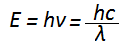

प्लांक
प्लांक के क्वाण्टम सिद्धान्त के अनुसार, किसी वस्तु को प्रकाश तथा ऊष्मा का उत्सर्जन ऊर्जा के छोटे-छोटे बण्डलों के रूप में होता है जिन्हें क्वाण्टम कहते है।प्लांक के क्वाण्टम सिद्धान्त के अनुसार, किसी वस्तु को प्रकाश तथा ऊष्मा का उत्सर्जन ऊर्जा के छोटे-छोटे बण्डलों के रूप में होता है जिन्हें क्वाण्टम कहते है।क्वाण्टम की ऊर्जा,
क्वांटम सिद्धान्त का प्रतिपादन 1900 ई. में ऊष्मा विकिरण के संबंध में हुआ था। प्रकाश विद्युत की घटना का, जिसमें कुछ धातुओं पर प्रकाश के पड़ने से इलैक्ट्रॉन उत्सर्जित हो जाते हैं और तत्वों के रेखामय स्पेक्ट्रम की घटना का, जिसमें परमाणु में से एकवर्ण प्रकाश निकलता है, स्पष्टतया संकेत किसी नवीन प्रकार के कणिकासिद्धांत की ओर है। आइन्स्टाइन ने इन कणिकाओं का नाम फ़ोटान रख दिया है। ये कणिकाएँ द्रव्य की नहीं हैं, पुंजित ऊर्जा की हैं। प्रत्येक फ़ोटोन में ऊर्जा E का परिमाण प्रकाश तरंग की आवृत्ति n का अनुपाती होता है, E = hn (जहाँ h प्लांक का नियतांक है)। कॉम्पटन प्रभाव इनके बिना समझ में आ ही नहीं सकता।